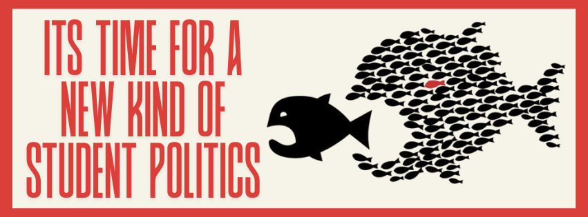
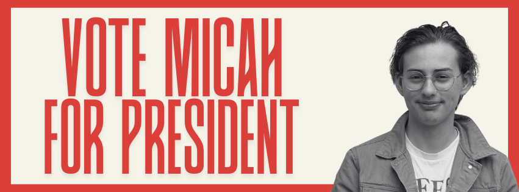

We all know what the issues are, and we have been fighting, unsuccessfully, for them for well over a decade.
During this time, students have continued to suffer without a universal study wage, continued to suffer under the burden of student loans, and continued to suffer with the reality of low-paid work alongside full-time study.
We cannot afford another VUWSA Presidency that mistakes an open letter, an ill-attended protest, or a quick radio segment for meaningful action. It is not good enough that the VUWSA Presidency has become solely a stepping stone for future political ambitions, where successive Presidents have cut their teeth but failed to win any substantial victories for students.
I’m running for President because I believe not only do we need a change of tactics, but we also need someone with an understanding of the underlying structural issues that are plaguing student unions. We must address them head-on, and we must take every opportunity available to us, including next year’s general election, to fight for real change.
There was a time when students were paid to attend university, graduating free from debt. The sky should still be the limit, but we must not delude ourselves into thinking that another President, waving a pair of twigs as wings, will carry us there.
“Mā te huruhuru ka rere te manu — adorn the bird with feathers, and it will fly.”
Vote Micah for VUWSA President.
GET INVOLVED
